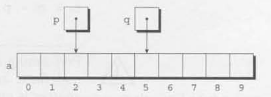
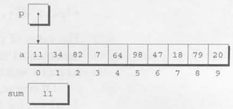
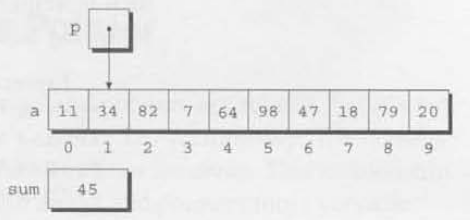
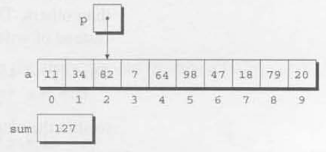

Optimization hinders evolution.
Chapter 11 introduced pointers and showed how they’re used as function arguments and as values returned by functions. This chapter covers another application for pointers. When pointers point to array elements, C allows us to perform arithmetic—addition and subtraction—on the pointers, which leads to an alternative way of processing arrays in which pointers take the place of array subscripts.
The relationship between pointers and arrays in C is a close one, as we’ll soon see. We’ll exploit this relationship in subsequent chapters, including Chapter 13 (Strings) and Chapter 17 (Advanced Uses of Pointers). Understanding the connection between pointers and arrays is critical for mastering C: it will give you insight into how C was designed and help you understand existing programs. Be aware, however, that one of the primary reasons for using pointers to process arrays—efficiency—is no longer as important as it once was, thanks to improved compilers.
Section 12.1 discusses pointer arithmetic and shows how pointers can be compared using the relational and equality operators. Section 12.2 then demonstrates how we can use pointer arithmetic for processing array elements. Section 12.3 reveals a key fact about arrays—an array name can serve as a pointer to the array’s first element—and uses it to show how array arguments really work. Section 12.4 shows how the topics of the first three sections apply to multidimensional arrays. Section 12.5 wraps up the chapter by exploring the relationship between pointers and variable-length arrays, a C99 feature.
We saw in Section 11.5 that pointers can point to array elements. For
example, suppose that a and p have been
declared as follows:
int a[10], *p;We can make p point to a[0] by writing
p = &a[0];Graphically, here’s what we’ve just done:
We can now access a[0] through p; for
example, we can store the value 5 in a[0] by writing
*p = 5;Here’s our picture now:

Making a pointer p point to an element of an array
a isn’t particularly exciting. However. by performing
pointer arithmetic (or address arithmetic) on p, we can
access the other elements of a. C supports three (and only
three) forms of pointer arithmetic:
- Adding an integer to a pointer
- Subtracting an integer from a pointer
- Subtracting one pointer from anotherLet’s take a close look at each of these operations. Our examples assume that the following declarations are in effect:
int a[0], *p, *q, i;
Adding an integer j to a pointer p yields a
pointer to the element j places after the one that
p points to. More precisely, if p points to
the array element a[i]. then p + j points to
a[i + j] (provided, of course, that a[i + j]
exists).
The following example illustrates pointer addition; diagrams show the
values of p and q at various points in the
computation.
p = &a[2];
q = p + 3;
p += 6;
If p points to the array element a[i], then
p - j points to a[i - j]. For example:
p = &a[8];
q = p - 3;
p -= 6;
When one pointer is subtracted from another, the result is the
distance (measured in array elements) between the pointers. Thus, if
p points to a[i] and q points to
a[j].then p - q is equal to
i - j. For example:
p = &a[5];
q = &a[1];
i = p - q; /* i is 4 */
i = q - p; /* i is -4 */
Performing arithmetic on a pointer that doesn’t point to an array element causes undefined behavior. Furthermore, the effect of subtracting one pointer from another is undefined unless both point to elements of the same array.
We can compare pointers using the relational operators
(<, <=, >,
>=) and the equality operators (== and
|=). Using the relational operators to compare two pointers
is meaningful only when both point to elements of the same array. The
outcome of the comparison depends on the relative positions of the two
elements in the array. For example, after the assignments
p = &a[5];
q = &a[1];the value of p <= q is 0 and the value of
p >= q is 1.
It’s legal for a pointer to point to an element within an array created by a compound literal. A compound literal, you may recall, is a C99 feature that can be used to create an array with no name.
Consider the following example:
int *p = (int [1]){3, 0, 3, 4, 1};p points to the first element of a five-element array
containing the integers 3, 0, 3, 4, and 1. Using a compound literal
saves us the trouble of first declaring an array variable and then
making p point to the first element of that array:
int a[] = {3, 0, 3, 4, 1}:
int *p = &a[0];Pointer arithmetic allows us to visit the elements of an array by
repeatedly incrementing a pointer variable. The following program
fragment, which sums the elements of an array a,
illustrates the technique. In this example, the pointer variable
p initially points to a[0]. Each time through
the loop, p is incremented; as a result, it points to
a[1], then a[2], and so forth. The loop
terminates when p steps past the last element of
a.
#define N 10
...
int a[N], sum, *p;
...
sum = 0;
for (p = &a[0]; p < &a[N]; p++)
sum += *p;The following figures show the contents of a,
sum, and p at the end of the first three loop
iterations (before p has been incremented).
At the end of the first iteration: I

At the end of the second iteration:

At the end of the third iteration

The condition p < &a[N] in the for
statement deserves special mention. Strange as it may seem, it’s legal
to apply the address operator to a[N], even though this
element doesn’t exist (a is indexed from 0 to
N — 1). Using a[N] in this fashion is
perfectly safe, since the loop doesn’t attempt to examine its value. The
body of the loop will be executed with p equal to
&a[0], &a[1], ...,
&a [N-1], but when p is equal to
&a[N], the loop terminates.
We could just as easily have written the loop without pointers, of
course, using subscripting instead. The argument most often cited in
support of pointer arithmetic is that it can save execution time.
However, that depends on the implementation—some C compilers actually
produce better code for loops that rely on
subscripting.
C programmers often combine the * (indirection) and
++ operators in statements that process array elements.
Consider the simple case of storing a value into an array element and
then advancing to the next element. Using array subscripting, we might
write
a[i++] = j;If p is pointing to an array element, the corresponding
statement would be
*p++ = j;Because the postfix version of ++ takes precedence over
*, the compiler sees this as
*(p++) = j;The value of p++ is p. (Since we’re using
the postfix version of ++, p won’t be incremented until
after the expression has been evaluated.) Thus, the value of
*(p++) will be *p—the object to which
p is pointing.
Of course, *p++ isn’t the only legal combination of
* and ++. We could write (*p)++,
for example, which returns the value of the object that p
points to, and then increments that object (p itself is
unchanged). If you find this confusing, the following table may
help:
|
Expression |
Meaning |
|---|---|
|
|
Value of expression is |
|
|
Value of expression is |
|
|
Increment |
|
|
Increment p first; value of expression is p after increment |
All four combinations appear in programs, although some are far more
common than others. The one we’ll see most frequently is
*p++, which is handy in loops. Instead of writing
for (p = &a[0]; p < &a[N]; p++)
sum += *p;to sum the elements of the array a, we could write
p = &a[0];
while (p < &a[N])
sum += *p++;The * and -- operators mix in the same way
as * and ++. For an application that combines
* and --, let’s return to the stack example of
Section 10.2. The original version of the stack relied on an integer
variable named top to keep track of the “top-of-stack”
position in the contents array. Let’s replace
top by a pointer variable that points initially to element
0 of the contents array:
int *top_ptr = &contents[0];Here are the new push and pop functions
(updating the other stack functions is left as an exercise):
void push(int i)
{
if(is_full())
stack_overflow() ;
else
*top_ptr++ = i;
}
int pop(void)
{
if (is_empty())
stack_underflow() ;
else
return *--top_ptr;
)Note that I’ve written *--top_ptr, not
*top_ptr--, since I want pop to decrement
top_ptr before fetching the value to which it
points.